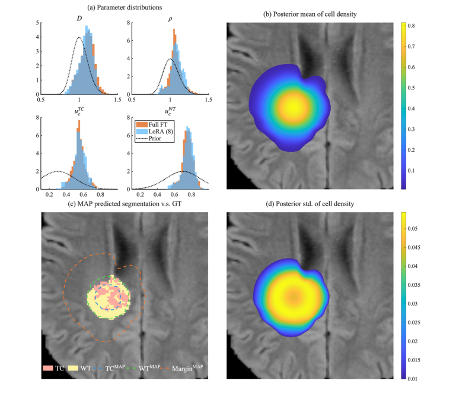

摘要解读
基于低秩适配的贝叶斯双层算子学习：偏微分方程反问题的高效不确定性量化
Bayesian bilevel operator learning with low-rank adaptation for efficient uncertainty quantification of PDE inverse problems
解读更新 2026-10-16 15:24 · 依据公开摘要整理，未核验全文细节
PDE反问题不仅需要推断参数，还需要量化推断的不确定性。这项研究提出B-BiLO，将贝叶斯后验采样与局部算子学习结合，探索如何在保持推断准确性的同时降低计算负担。
文章目录
参数推断之外，还要回答有多不确定
偏微分方程（PDE）反问题中的不确定性量化，是本文关注的核心问题。摘要将科学机器学习的价值概括为：在保留物理结构的同时，以数据驱动方式学习模型组成部分，并为新兴成像技术和临床研究提供所需的可扩展性与适应性。
本文的切入点不是单纯训练一个预测网络，而是让神经网络参与贝叶斯推断过程：用局部解算子近似支持参数采样，同时关注这种近似会怎样影响最终的后验准确性。
上层采样参数，下层用LoRA学习局部算子
作者提出用于PDE贝叶斯推断的双层局部算子学习框架B-BiLO。上层通过哈密顿蒙特卡洛从参数后验分布中采样；下层通过低秩适应（LoRA）微调神经网络，在局部近似PDE的解算子。两层分别承担参数推断与局部近似任务。
摘要强调，该框架无需合成数据或伴随方程即可开展基于梯度的高效采样。网络权重采用确定性优化，而不是像贝叶斯神经网络那样在高维权重空间中采样。作者还分析了下层近似优化产生的误差及其对后验准确性的影响。
双层框架中的参数采样与局部算子更新

图解：图1｜BiLO与LoRA求解贝叶斯PDE反问题的框架示意。a展示上层基于梯度的参数后验采样，横轴为PDE参数，纵向表示后验密度，箭头示意局部梯度信息；b以空间位置和参数为自变量，对比灰色全局解算子与蓝色局部近似，强调局部残差及残差梯度条件；c展示下层神经网络学习局部算子，并通过低秩权重更新衔接不同参数位置的近似。
原文图注与出处
Fig. 1 | A schematic for solving the Bayesian PDE inverse problem using BiLO and LoRA. a At the upper level, we sample the PDE parameters θ from the posterior distribution using gradient-based MCMC. b The full operator u(x, θ) (gray surface) and its local approximation u(x, θ1) and u(x, θ2) (blue surface), which satisfies vanishing residual and residual-gradient conditions. The local operator suffices to
Zhang, Ray Zirui et al.
原文图页 · CC BY 4.0跨PDE模型报告准确且高效的不确定性量化
摘要报告，涵盖肿瘤生长在内的不同PDE模型数值实验表明，B-BiLO能够实现准确且高效的不确定性量化。这是当前资料明确给出的总体结果，但摘要没有提供具体误差、耗时或加速倍数，因此不宜将定性结论扩写为量化优势。
另一项值得关注的成果是对误差传递的分析：作者不只讨论局部近似如何服务采样，还建立了下层近似优化误差对后验准确性的影响关系。不过，具体误差界及其成立条件仍需进一步阅读正文。
肿瘤生长示例中的参数后验与空间分布


图解：图4｜使用LoRA秩为8的B-BiLO推断患者特异性胶质母细胞瘤生长参数。a比较LoRA与全参数微调所得参数后验，并展示虚线先验；各小图横轴为相应参数值，纵轴表示分布密度。b展示肿瘤细胞密度的后验均值；c比较最大后验估计对应的分割与真实标注；d展示细胞密度的后验标准差。空间图叠加于脑部影像，b、d的色标分别表示均值与标准差。
摘要尚不足以界定性能优势的适用边界
仅凭摘要，无法判断各模型的数据规模、观测噪声设置、重复试验安排，以及比较方法的配置和计算预算是否一致；也无法确定理论分析所需的全部假设。这些属于当前资料的信息边界，不能据此认定论文没有开展相应工作。
肿瘤生长被列为数值实验对象，但摘要不足以判断患者样本规模、独立验证范围或临床适用性。摘要提及的成像与临床价值属于研究背景，不能直接当作已经验证的临床效果。
阅读启发：局部近似如何保持后验可信
阅读启发：对关注结构反演与可靠性分析的读者，更值得追问的是，局部算子在什么条件下足以支撑可信的后验采样，以及LoRA近似和下层优化误差如何进入准确性分析。继续阅读时可优先核对这些条件与性能比较口径，而不宜直接推定该方法已适用于结构设计或疲劳可靠性问题。
以上为本站阅读启发与建议，不是论文已验证的结论。